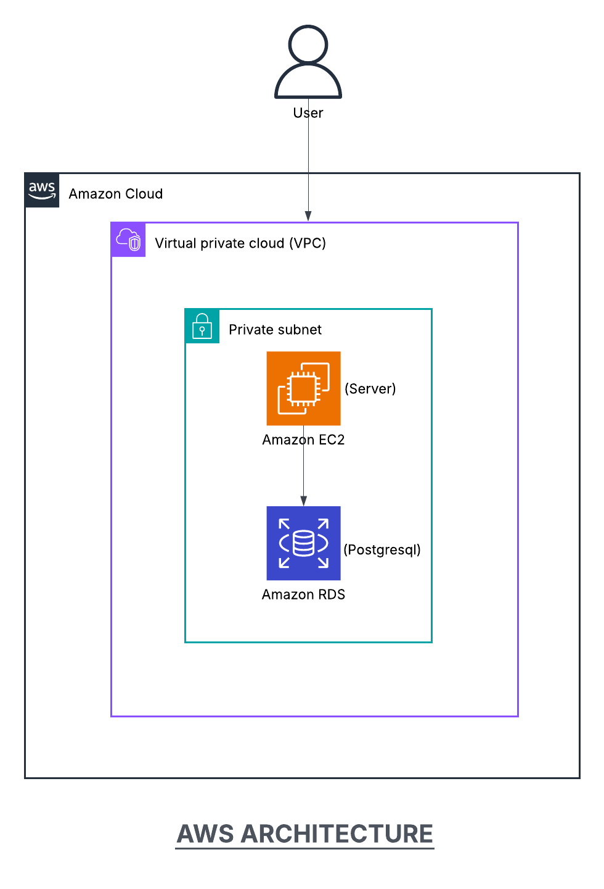

AWS Architecture

Overview
This architecture illustrates how the E-Learning Management System (ELMS) is hosted on Amazon Web Services (AWS) to ensure scalability, security, and high availability.
It leverages AWS core components such as VPC, EC2, and RDS to manage application and database layers efficiently.
Key Components
1. User
- The end-user accesses the application through a web browser or client interface.
- All requests are directed to the application server hosted on AWS.
2. Amazon Cloud
- Represents the entire AWS infrastructure used to deploy and manage cloud services.
- Provides reliability, scalability, and global accessibility.
3. Virtual Private Cloud (VPC)
- A secure isolated network within AWS where resources (like EC2 and RDS) are hosted.
- Ensures complete control over network configuration, IP addressing, and access control.
4. Private Subnet
- The private area of the VPC where critical backend resources are kept safe from the public internet.
- Contains the EC2 instance (server) and RDS database for internal communication only.
5. Amazon EC2 (Elastic Compute Cloud)
- Acts as the application server.
- Hosts the Node.js + Express backend for the ELMS.
- Handles business logic, authentication, and API endpoints.
- Communicates securely with the RDS database in the private subnet.
6. Amazon RDS (Relational Database Service)
- Hosts the PostgreSQL database for storing all user, course, and feedback data.
- Managed service — handles backups, scaling, and availability automatically.
- Accessible only from the EC2 instance inside the same private subnet.
Workflow Summary
- The user sends a request to the application.
- The request reaches the EC2 instance running the backend.
- The EC2 instance processes the request and, if needed, interacts with Amazon RDS (PostgreSQL).
- The processed response is returned to the user via the internet.
Benefits of This Architecture
| Feature | Description |
|---|---|
| Scalability | Easily scale EC2 and RDS instances based on traffic. |
| Security | Private subnet and VPC ensure isolated access control. |
| Reliability | Managed AWS services reduce downtime risk. |
| Performance | Optimized communication between EC2 and RDS within the same VPC. |
| Ease of Management | AWS handles infrastructure, backups, and monitoring. |
Conclusion
This AWS setup provides a secure, scalable, and efficient environment for deploying the E-Learning Management System (ELMS).
It ensures that the application remains responsive and protected, even as usage grows.